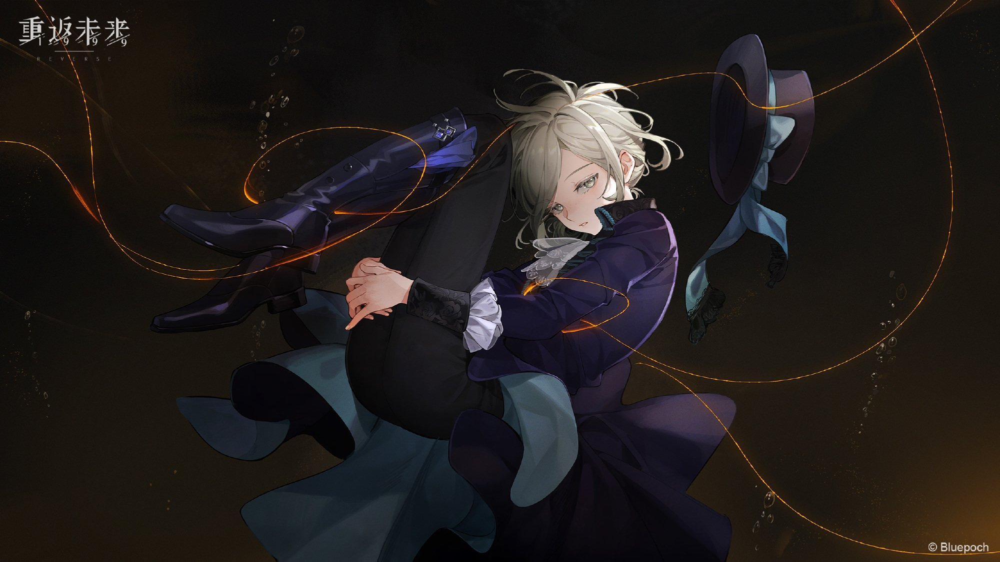

About Vertin
Vertin is mysterious. She is a timekeeper that goes through many eras in order to find the cause of the storm
Vertin thinking
Vertin's Characteristics
- She has experienced trauma.
- She is from the 90's
- She works for the Foundation
Friends
Vertin has made some friends on her journey. However, some got reversed by the Storm. Click on the link to read more about them.